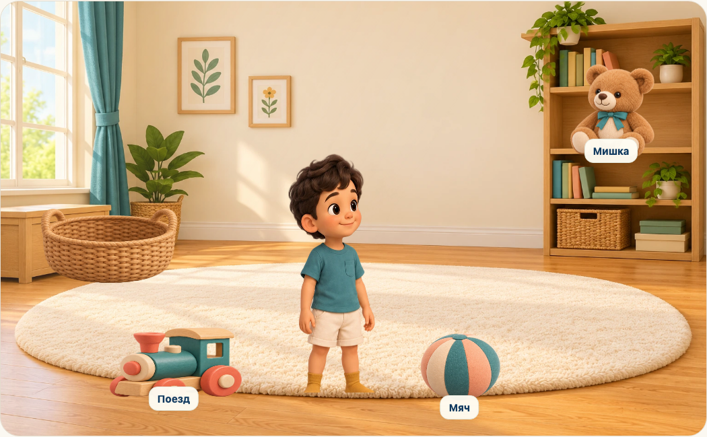
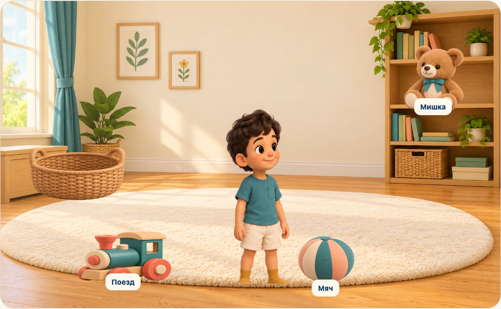
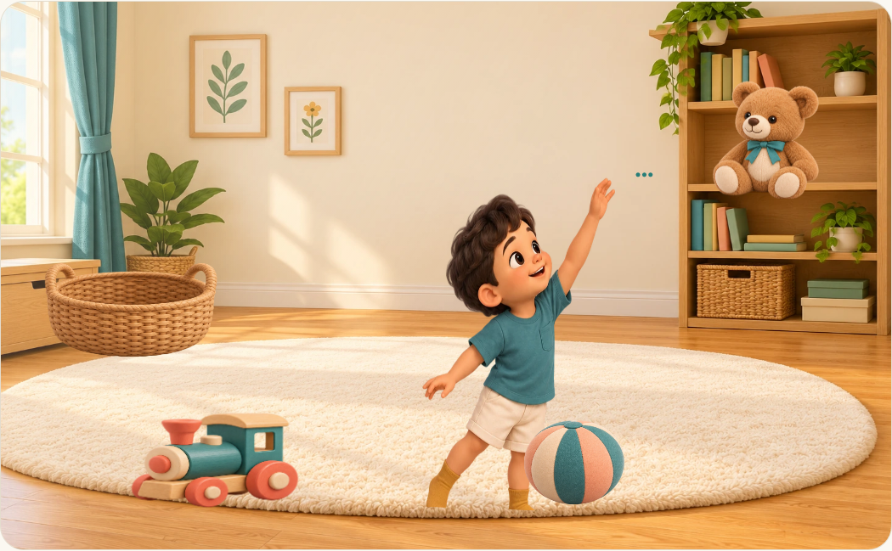
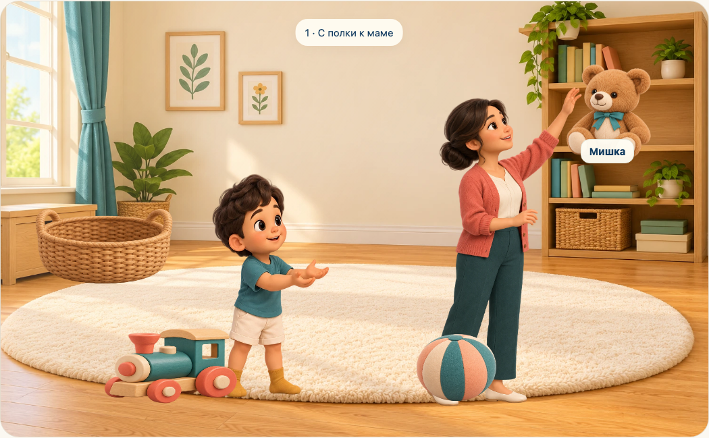
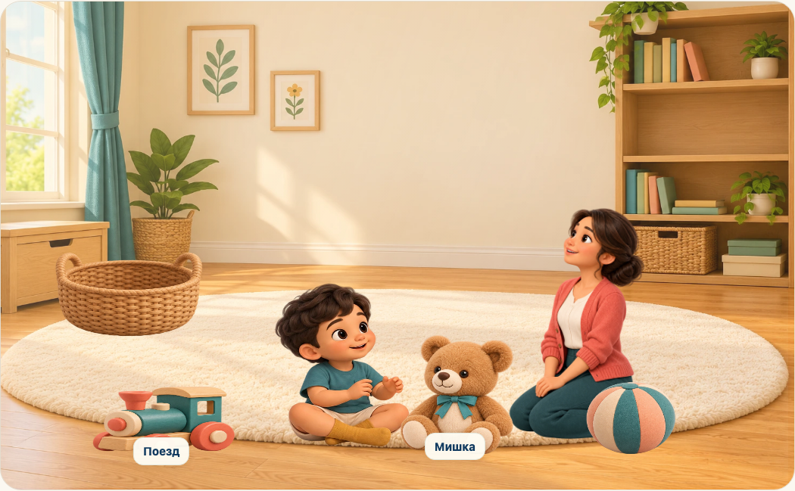
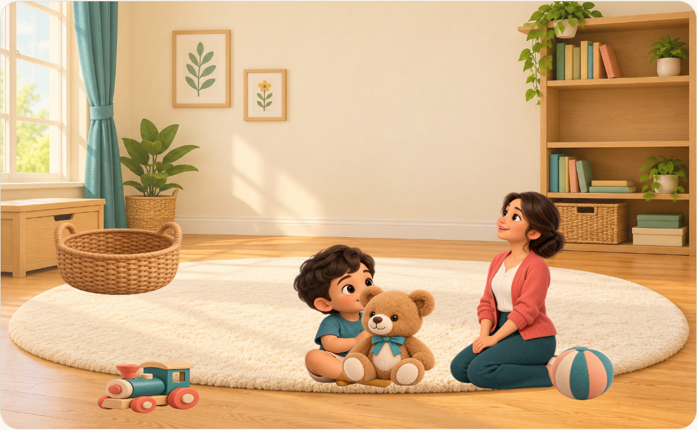
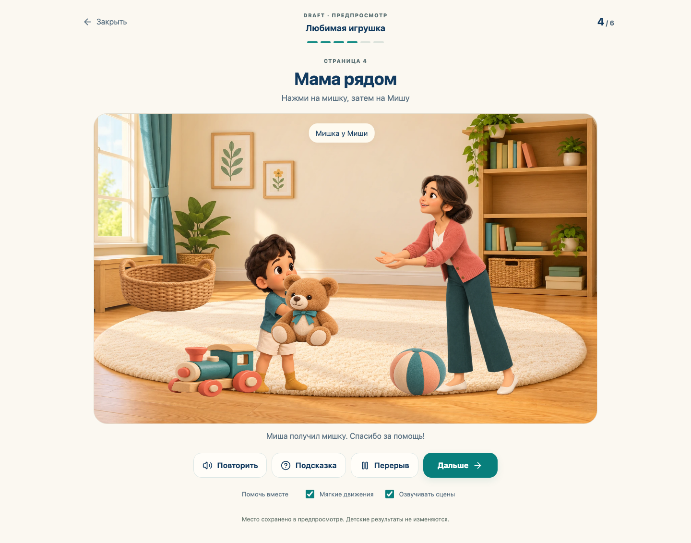
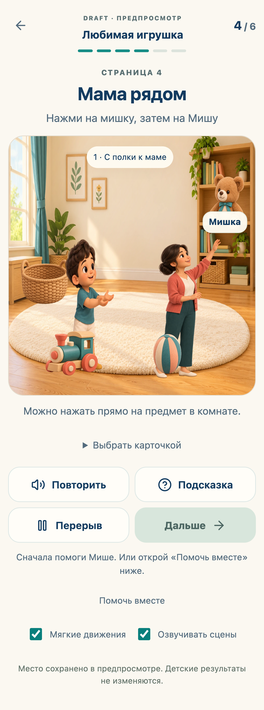

SÖYLE · ИНТЕРАКТИВНАЯ КНИГА · ВЕРСИЯ 1Любимая игрушка
Шесть сцен в одной комнате: игрушки можно трогать, просьбу — выразить карточкой, а мишку — передать от мамы к Мише. Выбор игрушки в начале меняет последующую игру. Все сцены остаются DRAFT до проверки специалистом.
Реальное прохождение
Запись браузера, без звука. Озвучка сцен подключена в самом проигрывателе; для записи и автоматических проверок использовался тестовый голос.
Открыть в приложении: Кабинет родителя → Любимая игрушка → Открыть живую историю. Предпросмотр сохраняется отдельно от результатов ребёнка. На прод эта версия не опубликована.
Шесть живых композиций

01 · Давай поиграем — свободный выбор предмета

02 · Где мишка? — поиск непосредственно в комнате

03 · Позовём на помощь — три доступных способа попросить

04 · Мама рядом — взять с полки и передать Мише

05 · Наша игра — обнять мишку или покатать выбранную игрушку

06 · Хорошо быть вместе — спокойное завершение без оценок Передача мишки

На телефоне

Визуальная непрерывность